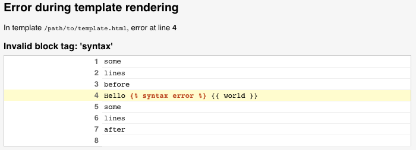

作为一个Web框架，Django需要一种动态生成HTML的便捷方法。最常用的方法依赖于模板。模板包含所需HTML输出的静态部分以及描述动态内容将被插入的一些特殊语法。有关创建带有模板的HTML页面的示例，请参阅:doc:`Tutorial 3</intro/tutorial03>
Django项目可以配置一个或多个模板引擎（或者如果不使用模板，甚至为零）。Django后端内置一个自己的模板系统，创造性地称为Django template language（DTL），和一个流行的替代品JICAN2*。后端也可以使用第三方提供其他可用的模板语言。
Django定义了一个标准的API，用于加载和渲染模板，而不用考虑后端的模板系统。加载包括查找给定标识符的模板并对其进行预处理，通常将其编译的结果保存在内存中。渲染工具将上下文数据插入模板并返回结果字符串。
Doc：Django template language </ref/templates/language>是Django自己的模板系统。直到Django 1.8，它是唯一可用的内置选项。这是一个很好的模板库，即使它是相当僵硬和使用时带有它自己特质。如果您没有紧迫的理由需要去选择另一个后端，则应该使用DTL，特别是如果您正在编写可插入的应用程序并打算分发模板。在 Django's contrib apps 中的有些模板，比如:doc:`django.contrib.admin </ref/contrib/admin/index>，使用DTL。
由于历史原因，模板引擎的通用支持和Django模板语言的实现都存在于``django.template`` 模块的命名空间中。
警告
模板系统使用不可信的模板作者的模板是不安全的。例如，一个站点不应该允许它的用户提供他们自己的模板，因为模板作者可以做一些事情，比如执行XSS攻击和拿到包含敏感信息的模板变量的访问权。
Templates engines are configured with the TEMPLATES setting. It's a
list of configurations, one for each engine. The default value is empty. The
settings.py generated by the startproject command defines a
more useful value:
TEMPLATES = [
{
'BACKEND': 'django.template.backends.django.DjangoTemplates',
'DIRS': [],
'APP_DIRS': True,
'OPTIONS': {
# ... some options here ...
},
},
]
BACKEND is a dotted Python path to a template
engine class implementing Django's template backend API. The built-in backends
are django.template.backends.django.DjangoTemplates and
django.template.backends.jinja2.Jinja2.
Since most engines load templates from files, the top-level configuration for each engine contains two common settings:
DIRS defines a list of directories where the
engine should look for template source files, in search order.APP_DIRS tells whether the engine should
look for templates inside installed applications. Each backend defines a
conventional name for the subdirectory inside applications where its
templates should be stored.While uncommon, it's possible to configure several instances of the same
backend with different options. In that case you should define a unique
NAME for each engine.
OPTIONS contains backend-specific settings.
The django.template.loader module defines two functions to load templates.
get_template(template_name, using=None)[源代码]¶This function loads the template with the given name and returns a
Template object.
The exact type of the return value depends on the backend that loaded the
template. Each backend has its own Template class.
get_template() tries each template engine in order until one succeeds.
If the template cannot be found, it raises
TemplateDoesNotExist. If the template is found but
contains invalid syntax, it raises
TemplateSyntaxError.
How templates are searched and loaded depends on each engine's backend and configuration.
If you want to restrict the search to a particular template engine, pass
the engine's NAME in the using argument.
select_template(template_name_list, using=None)[源代码]¶select_template() is just like get_template(), except it takes a
list of template names. It tries each name in order and returns the first
template that exists.
If loading a template fails, the following two exceptions, defined in
django.template, may be raised:
TemplateDoesNotExist(msg, tried=None, backend=None, chain=None)[源代码]¶This exception is raised when a template cannot be found. It accepts the following optional arguments for populating the template postmortem on the debug page:
backendtried(origin, status), where
origin is an origin-like object and
status is a string with the reason the template wasn't found.chainTemplateDoesNotExist
exceptions raised when trying to load a template. This is used by
functions, such as get_template(), that
try to load a given template from multiple engines.TemplateSyntaxError(msg)[源代码]¶This exception is raised when a template was found but contains errors.
Template objects returned by get_template() and select_template()
must provide a render() method with the following signature:
Template.render(context=None, request=None)¶Renders this template with a given context.
If context is provided, it must be a dict. If it isn't
provided, the engine will render the template with an empty context.
If request is provided, it must be an HttpRequest.
Then the engine must make it, as well as the CSRF token, available in the
template. How this is achieved is up to each backend.
Here's an example of the search algorithm. For this example the
TEMPLATES setting is:
TEMPLATES = [
{
'BACKEND': 'django.template.backends.django.DjangoTemplates',
'DIRS': [
'/home/html/example.com',
'/home/html/default',
],
},
{
'BACKEND': 'django.template.backends.jinja2.Jinja2',
'DIRS': [
'/home/html/jinja2',
],
},
]
If you call get_template('story_detail.html'), here are the files Django
will look for, in order:
/home/html/example.com/story_detail.html ('django' engine)/home/html/default/story_detail.html ('django' engine)/home/html/jinja2/story_detail.html ('jinja2' engine)If you call select_template(['story_253_detail.html', 'story_detail.html']),
here's what Django will look for:
/home/html/example.com/story_253_detail.html ('django' engine)/home/html/default/story_253_detail.html ('django' engine)/home/html/jinja2/story_253_detail.html ('jinja2' engine)/home/html/example.com/story_detail.html ('django' engine)/home/html/default/story_detail.html ('django' engine)/home/html/jinja2/story_detail.html ('jinja2' engine)When Django finds a template that exists, it stops looking.
Tip
You can use select_template() for flexible
template loading. For example, if you've written a news story and want
some stories to have custom templates, use something like
select_template(['story_%s_detail.html' % story.id,
'story_detail.html']). That'll allow you to use a custom template for an
individual story, with a fallback template for stories that don't have
custom templates.
It's possible -- and preferable -- to organize templates in subdirectories inside each directory containing templates. The convention is to make a subdirectory for each Django app, with subdirectories within those subdirectories as needed.
Do this for your own sanity. Storing all templates in the root level of a single directory gets messy.
To load a template that's within a subdirectory, just use a slash, like so:
get_template('news/story_detail.html')
Using the same TEMPLATES option as above, this will attempt to load
the following templates:
/home/html/example.com/news/story_detail.html ('django' engine)/home/html/default/news/story_detail.html ('django' engine)/home/html/jinja2/news/story_detail.html ('jinja2' engine)此外，为了减少加载和渲染模板的重复性，Django 提供了一个自动处理的快捷函数。
render_to_string(template_name, context=None, request=None, using=None)[源代码]¶render_to_string() 加载一个模板 get_template() ，并立即调用它的 render() 方法。它需要下面的参数。
template_nameselect_template() ，而不是 get_template() 找到模板。contextdict 用作模板的渲染上下文。requestHttpRequest 在模板的渲染过程中可用。usingNAME。对模板的搜索将限于该引擎。使用实例：
from django.template.loader import render_to_string
rendered = render_to_string('my_template.html', {'foo': 'bar'})
还可以参看 render() 快捷函数，它调用 render_to_string() ，并将结果提供给 HttpResponse ，适合从视图返回。
最后，您可以直接使用配置好的引擎：
设置 BACKEND 为 'django.template.backends.django.DjangoTemplates'，以配置 Django 模板引擎。
When APP_DIRS is True, DjangoTemplates
engines look for templates in the templates subdirectory of installed
applications. This generic name was kept for backwards-compatibility.
DjangoTemplates engines accept the following OPTIONS:
'autoescape': a boolean that controls whether HTML autoescaping is
enabled.
It defaults to True.
警告
Only set it to False if you're rendering non-HTML templates!
'context_processors': a list of dotted Python paths to callables that
are used to populate the context when a template is rendered with a request.
These callables take a request object as their argument and return a
dict of items to be merged into the context.
It defaults to an empty list.
See RequestContext for more information.
'debug': a boolean that turns on/off template debug mode. If it is
True, the fancy error page will display a detailed report for any
exception raised during template rendering. This report contains the
relevant snippet of the template with the appropriate line highlighted.
It defaults to the value of the DEBUG setting.
'loaders': a list of dotted Python paths to template loader classes.
Each Loader class knows how to import templates from a particular
source. Optionally, a tuple can be used instead of a string. The first item
in the tuple should be the Loader class name, and subsequent items are
passed to the Loader during initialization.
The default depends on the values of DIRS and
APP_DIRS.
See Loader types for details.
'string_if_invalid': the output, as a string, that the template system
should use for invalid (e.g. misspelled) variables.
It defaults to an empty string.
See How invalid variables are handled for details.
'file_charset': the charset used to read template files on disk.
It defaults to the value of FILE_CHARSET.
'libraries': A dictionary of labels and dotted Python paths of template
tag modules to register with the template engine. This can be used to add
new libraries or provide alternate labels for existing ones. For example:
OPTIONS={
'libraries': {
'myapp_tags': 'path.to.myapp.tags',
'admin.urls': 'django.contrib.admin.templatetags.admin_urls',
},
}
Libraries can be loaded by passing the corresponding dictionary key to
the {% load %} tag.
'builtins': A list of dotted Python paths of template tag modules to
add to built-ins. For example:
OPTIONS={
'builtins': ['myapp.builtins'],
}
Tags and filters from built-in libraries can be used without first calling
the {% load %} tag.
Requires Jinja2 to be installed:
$ pip install Jinja2
...\> pip install Jinja2
Set BACKEND to
'django.template.backends.jinja2.Jinja2' to configure a Jinja2 engine.
When APP_DIRS is True, Jinja2 engines
look for templates in the jinja2 subdirectory of installed applications.
The most important entry in OPTIONS is
'environment'. It's a dotted Python path to a callable returning a Jinja2
environment. It defaults to 'jinja2.Environment'. Django invokes that
callable and passes other options as keyword arguments. Furthermore, Django
adds defaults that differ from Jinja2's for a few options:
'autoescape': True'loader': a loader configured for DIRS and
APP_DIRS'auto_reload': settings.DEBUG'undefined': DebugUndefined if settings.DEBUG else UndefinedJinja2 engines also accept the following OPTIONS:
'context_processors': a list of dotted Python paths to callables that
are used to populate the context when a template is rendered with a request.
These callables take a request object as their argument and return a
dict of items to be merged into the context.
It defaults to an empty list.
Using context processors with Jinja2 templates is discouraged.
Context processors are useful with Django templates because Django templates
don't support calling functions with arguments. Since Jinja2 doesn't have
that limitation, it's recommended to put the function that you would use as a
context processor in the global variables available to the template using
jinja2.Environment as described below. You can then call that function in
the template:
{{ function(request) }}
Some Django templates context processors return a fixed value. For Jinja2
templates, this layer of indirection isn't necessary since you can add
constants directly in jinja2.Environment.
The original use case for adding context processors for Jinja2 involved:
Unless all of these conditions are met, passing a function to the template is simpler and more in line with the design of Jinja2.
The default configuration is purposefully kept to a minimum. If a template is
rendered with a request (e.g. when using render()),
the Jinja2 backend adds the globals request, csrf_input, and
csrf_token to the context. Apart from that, this backend doesn't create a
Django-flavored environment. It doesn't know about Django filters and tags.
In order to use Django-specific APIs, you must configure them into the
environment.
For example, you can create myproject/jinja2.py with this content:
from django.templatetags.static import static
from django.urls import reverse
from jinja2 import Environment
def environment(**options):
env = Environment(**options)
env.globals.update({
'static': static,
'url': reverse,
})
return env
and set the 'environment' option to 'myproject.jinja2.environment'.
Then you could use the following constructs in Jinja2 templates:
<img src="{{ static('path/to/company-logo.png') }}" alt="Company Logo">
<a href="{{ url('admin:index') }}">Administration</a>
The concepts of tags and filters exist both in the Django template language and in Jinja2 but they're used differently. Since Jinja2 supports passing arguments to callables in templates, many features that require a template tag or filter in Django templates can be achieved simply by calling a function in Jinja2 templates, as shown in the example above. Jinja2's global namespace removes the need for template context processors. The Django template language doesn't have an equivalent of Jinja2 tests.
Here's how to implement a custom template backend in order to use another
template system. A template backend is a class that inherits
django.template.backends.base.BaseEngine. It must implement
get_template() and optionally from_string(). Here's an example for a
fictional foobar template library:
from django.template import TemplateDoesNotExist, TemplateSyntaxError
from django.template.backends.base import BaseEngine
from django.template.backends.utils import csrf_input_lazy, csrf_token_lazy
import foobar
class FooBar(BaseEngine):
# Name of the subdirectory containing the templates for this engine
# inside an installed application.
app_dirname = 'foobar'
def __init__(self, params):
params = params.copy()
options = params.pop('OPTIONS').copy()
super().__init__(params)
self.engine = foobar.Engine(**options)
def from_string(self, template_code):
try:
return Template(self.engine.from_string(template_code))
except foobar.TemplateCompilationFailed as exc:
raise TemplateSyntaxError(exc.args)
def get_template(self, template_name):
try:
return Template(self.engine.get_template(template_name))
except foobar.TemplateNotFound as exc:
raise TemplateDoesNotExist(exc.args, backend=self)
except foobar.TemplateCompilationFailed as exc:
raise TemplateSyntaxError(exc.args)
class Template:
def __init__(self, template):
self.template = template
def render(self, context=None, request=None):
if context is None:
context = {}
if request is not None:
context['request'] = request
context['csrf_input'] = csrf_input_lazy(request)
context['csrf_token'] = csrf_token_lazy(request)
return self.template.render(context)
See DEP 182 for more information.
The Django debug page has hooks to provide detailed information when a template error arises. Custom template engines can use these hooks to enhance the traceback information that appears to users. The following hooks are available:
The postmortem appears when TemplateDoesNotExist is
raised. It lists the template engines and loaders that were used when trying
to find a given template. For example, if two Django engines are configured,
the postmortem will appear like:
Custom engines can populate the postmortem by passing the backend and
tried arguments when raising TemplateDoesNotExist.
Backends that use the postmortem should specify an origin on the template object.
If an error happens during template parsing or rendering, Django can display the line the error happened on. For example:
Custom engines can populate this information by setting a template_debug
attribute on exceptions raised during parsing and rendering. This attribute
is a dict with the following values:
'name': The name of the template in which the exception occurred.'message': The exception message.'source_lines': The lines before, after, and including the line the
exception occurred on. This is for context, so it shouldn't contain more than
20 lines or so.'line': The line number on which the exception occurred.'before': The content on the error line before the token that raised the
error.'during': The token that raised the error.'after': The content on the error line after the token that raised the
error.'total': The number of lines in source_lines.'top': The line number where source_lines starts.'bottom': The line number where source_lines ends.Given the above template error, template_debug would look like:
{
'name': '/path/to/template.html',
'message': "Invalid block tag: 'syntax'",
'source_lines': [
(1, 'some\n'),
(2, 'lines\n'),
(3, 'before\n'),
(4, 'Hello {% syntax error %} {{ world }}\n'),
(5, 'some\n'),
(6, 'lines\n'),
(7, 'after\n'),
(8, ''),
],
'line': 4,
'before': 'Hello ',
'during': '{% syntax error %}',
'after': ' {{ world }}\n',
'total': 9,
'bottom': 9,
'top': 1,
}
Django templates have an Origin object available
through the template.origin attribute. This enables debug information to be
displayed in the template postmortem, as well as
in 3rd-party libraries, like the Django Debug Toolbar.
Custom engines can provide their own template.origin information by
creating an object that specifies the following attributes:
'name': The full path to the template.'template_name': The relative path to the template as passed into the
the template loading methods.'loader_name': An optional string identifying the function or class used
to load the template, e.g. django.template.loaders.filesystem.Loader.About this section
This is an overview of the Django template language's syntax. For details see the language syntax reference.
A Django template is simply a text document or a Python string marked-up using the Django template language. Some constructs are recognized and interpreted by the template engine. The main ones are variables and tags.
A template is rendered with a context. Rendering replaces variables with their values, which are looked up in the context, and executes tags. Everything else is output as is.
The syntax of the Django template language involves four constructs.
A variable outputs a value from the context, which is a dict-like object mapping keys to values.
Variables are surrounded by {{ and }} like this:
My first name is {{ first_name }}. My last name is {{ last_name }}.
With a context of {'first_name': 'John', 'last_name': 'Doe'}, this
template renders to:
My first name is John. My last name is Doe.
Dictionary lookup, attribute lookup and list-index lookups are implemented with a dot notation:
{{ my_dict.key }}
{{ my_object.attribute }}
{{ my_list.0 }}
If a variable resolves to a callable, the template system will call it with no arguments and use its result instead of the callable.
Tags provide arbitrary logic in the rendering process.
This definition is deliberately vague. For example, a tag can output content, serve as a control structure e.g. an "if" statement or a "for" loop, grab content from a database, or even enable access to other template tags.
Tags are surrounded by {% and %} like this:
{% csrf_token %}
Most tags accept arguments:
{% cycle 'odd' 'even' %}
Some tags require beginning and ending tags:
{% if user.is_authenticated %}Hello, {{ user.username }}.{% endif %}
A reference of built-in tags is available as well as instructions for writing custom tags.
Filters transform the values of variables and tag arguments.
They look like this:
{{ django|title }}
With a context of {'django': 'the web framework for perfectionists with
deadlines'}, this template renders to:
The Web Framework For Perfectionists With Deadlines
Some filters take an argument:
{{ my_date|date:"Y-m-d" }}
A reference of built-in filters is available as well as instructions for writing custom filters.
Comments look like this:
{# this won't be rendered #}
A {% comment %} tag provides multi-line comments.
About this section
This is an overview of the Django template language's APIs. For details see the API reference.
django.template.Engine encapsulates an instance of the Django
template system. The main reason for instantiating an
Engine directly is to use the Django template
language outside of a Django project.
django.template.backends.django.DjangoTemplates is a thin wrapper
adapting django.template.Engine to Django's template backend API.
django.template.Template represents a compiled template.
Templates are obtained with Engine.get_template() or Engine.from_string()
Likewise django.template.backends.django.Template is a thin wrapper
adapting django.template.Template to the common template API.
django.template.Context holds some metadata in addition to the
context data. It is passed to Template.render() for rendering a template.
django.template.RequestContext is a subclass of
Context that stores the current
HttpRequest and runs template context processors.
The common API doesn't have an equivalent concept. Context data is passed in a
plain dict and the current HttpRequest is passed
separately if needed.
Template loaders are responsible for locating templates, loading them, and
returning Template objects.
Django provides several built-in template loaders and supports custom template loaders.
Context processors are functions that receive the current
HttpRequest as an argument and return a dict of
data to be added to the rendering context.
Their main use is to add common data shared by all templates to the context without repeating code in every view.
Django provides many built-in context processors. Implementing a custom context processor is as simple as defining a function.
3月 30, 2019